DUCK
Beatmaker · Mixagem · Masterização · 36M+ Streams
Beatmaker · Mixagem · Masterização · 36M+ Streams
Sou Duck, produtor musical de Aracaju. Desde 2018 transformando ideias em experiências sonoras que conectam. Não faço apenas beats — construo universos.
Meu enfoque combina tecnologia de vanguarda com sensibilidade artística. Cada frequência tem um propósito, cada textura conta uma história.

Criação de beats originais do zero. Trap, Pop, MPB, Funk. Cada beat é uma peça única projetada para sua visão.
EQ dinâmico, compressão paralela, automação de panning. Cada instrumento ocupa exatamente o espaço que merece.
Loudness competitivo para Spotify e todas as plataformas. O toque final que separa o bom do épico.
Transformo ideias simples em produções completas. Arranjo, instrumentação e direção criativa.
Trilhas sonoras, sound design e mixagem para conteúdo audiovisual. Do curta-metragem ao anúncio publicitário.
Sessões de orientação para artistas emergentes. Te ajudo a encontrar seu som e se posicionar no mercado.
Trap · 2024
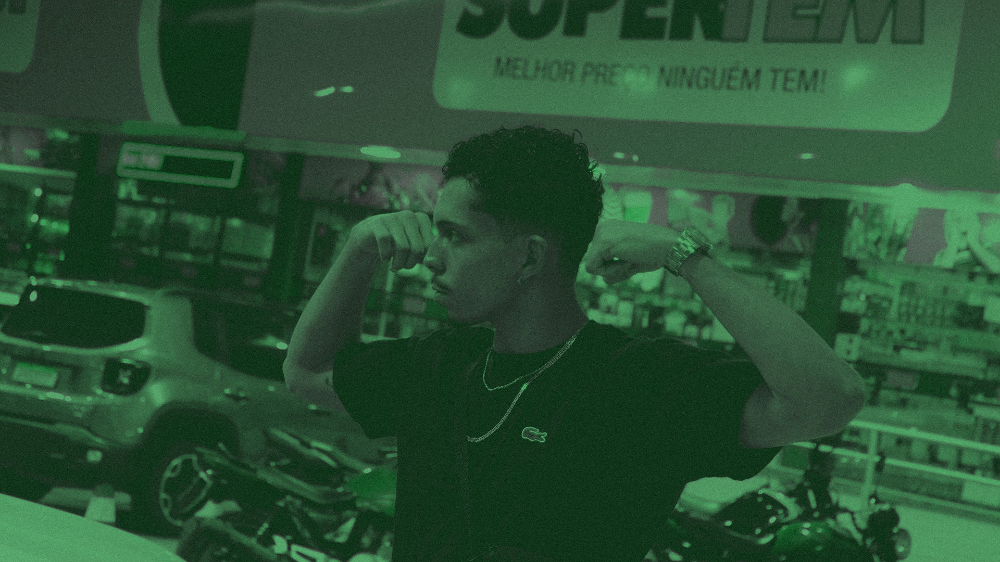
EP · 2024
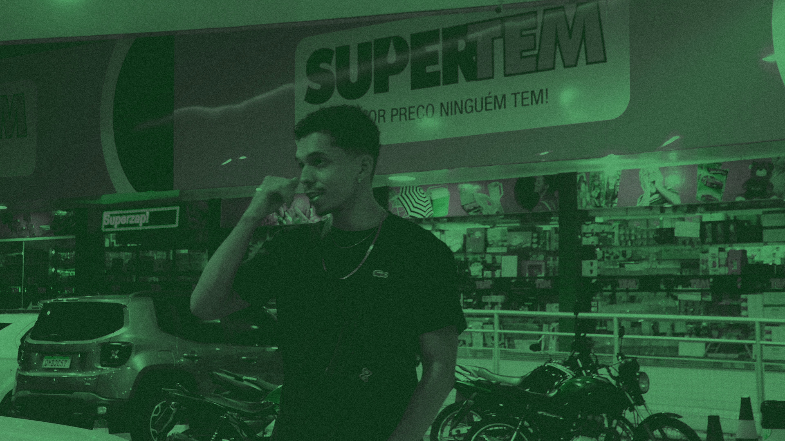
Single · 2024
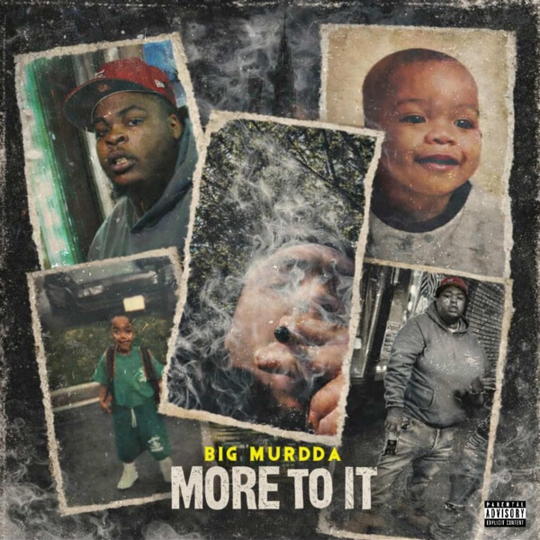
Single · Apple Music

EP · Apple Music

Single · Apple Music
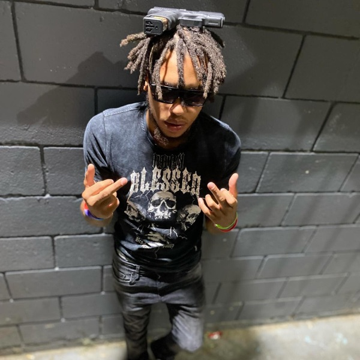
Remix

Single

Single
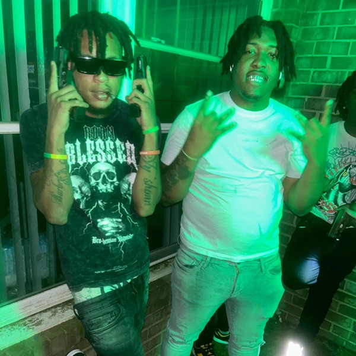
Single
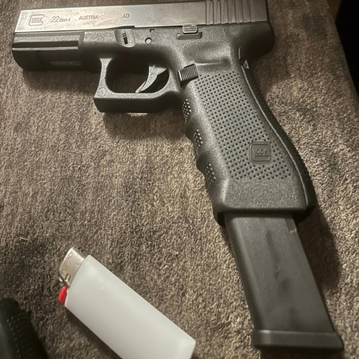
Single

Track

Track
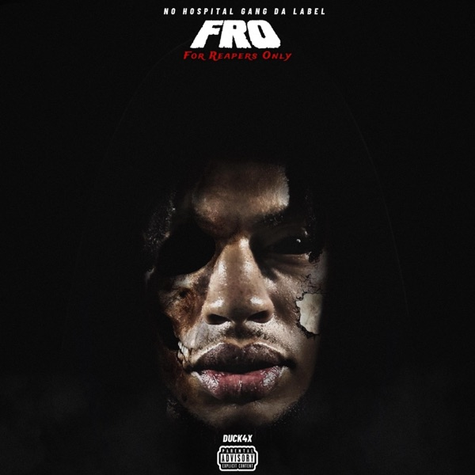
Track

Track
AKAI MPK Mini para programar beats y melodías directamente desde el hardware.
Focusrite Scarlett 18i20 con 18 entradas y 20 salidas para sesiones completas.
Genelec 8040B para mezclas precisas en cada frecuencia.
Moog Sub 37 para sonidos cálidos y texturas únicas.
Elektron Digitakt para ritmos programables y samples.
Tratamiento acústico profesional con Neumann U87 y Shure SM7B.
Ableton Live Suite + Logic Pro para producción y mezcla.
Beyerdynamic DT 990 Pro para monitoreo detallado.
Universal Audio Apollo x8 para conversión AD/DA de alta resolución.
Fender Stratocaster para grabar riffs y arreglos directos.
Muestras de cuerdas orquestales para capas cinematográficas.
Eurorack para sonidos experimentales y texturas únicas.
Congas, bongós, cajón para ritmos orgánicos y world music.
Compresores analógicos y EQs para color y warmth en la cadena.
Spitfire, Native Instruments, Output para orquesta y sound design.
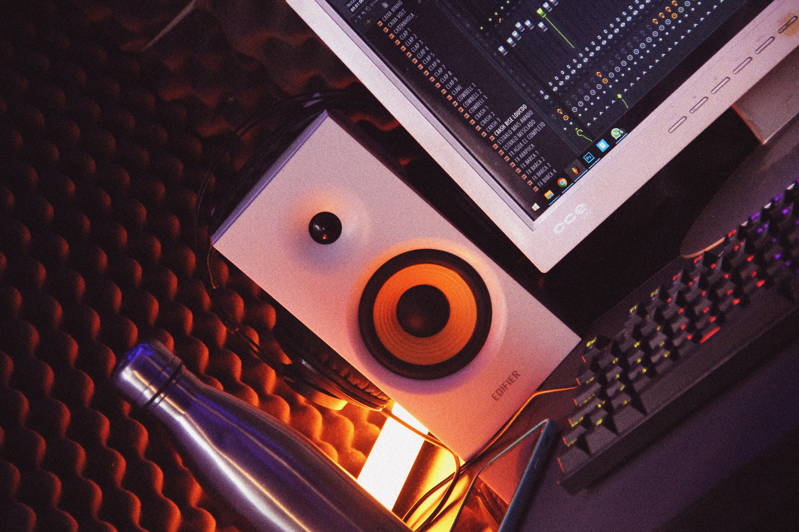
// 008 — ESTÚDIO
Home Studio · Mix Station · Production · Recording · Mixing · Mastering
Cada estação tem um propósito específico.
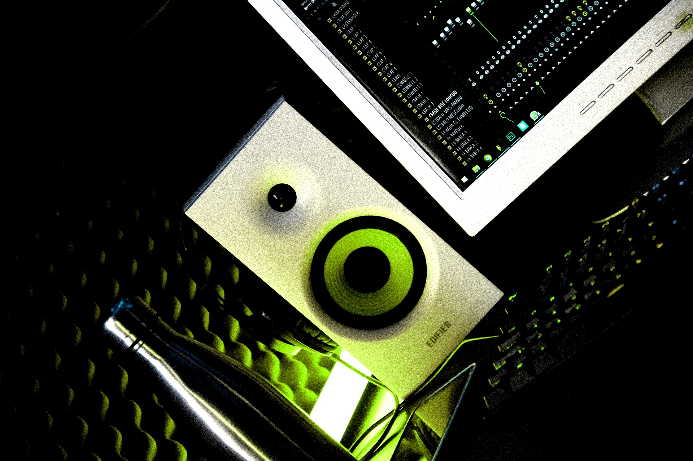
O coração da criação. Monitores de referência e tratamento acústico profissional.
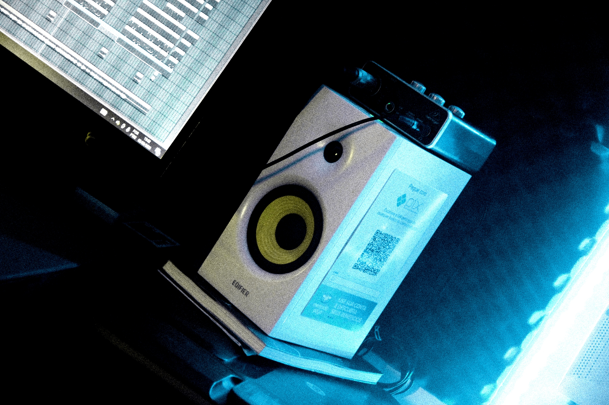
Onde a engenharia se torna arte. EQ, compressão, reverberação espacial.
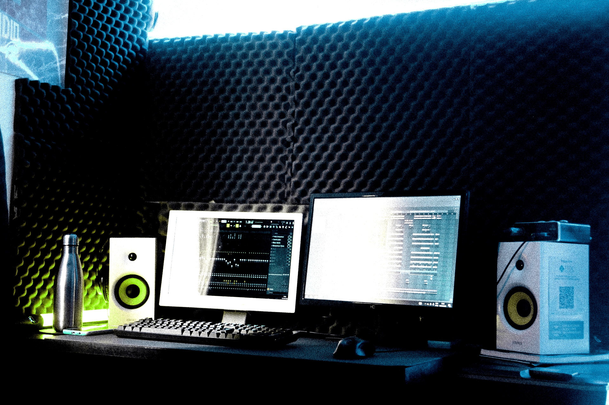
Sintetizadores analógicos e controladores MIDI. O laboratório de sons.
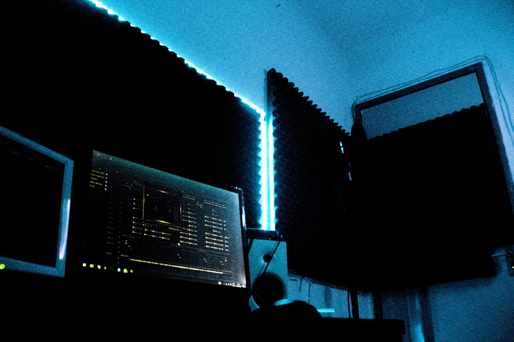
Cabine de gravação com tratamento acústico. Microfones de condensador e dinâmicos.
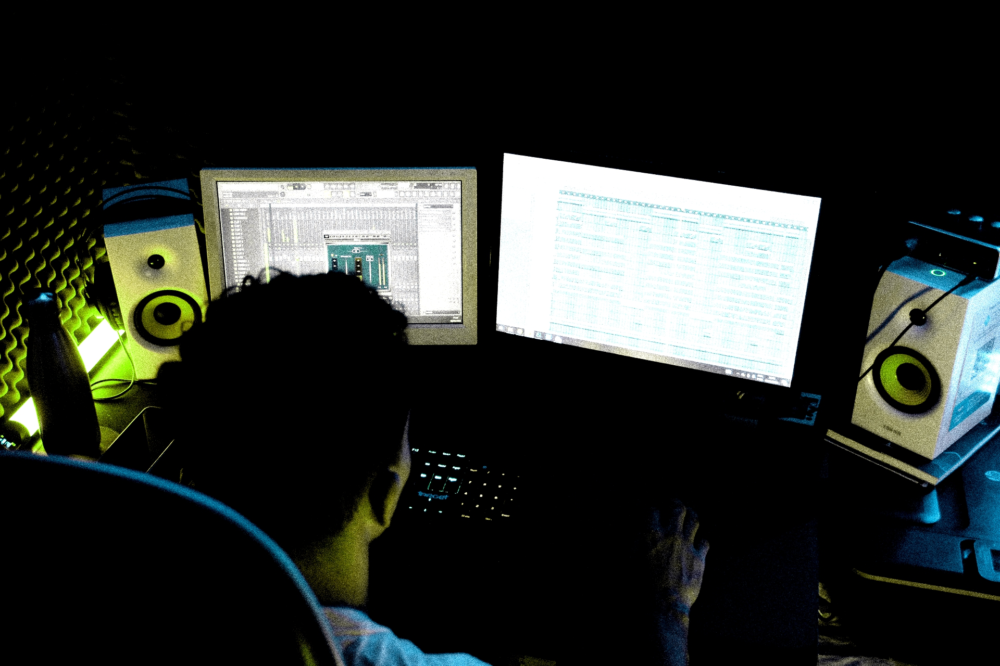
O refinamento final. Equalização, compressão, efeitos e automação.
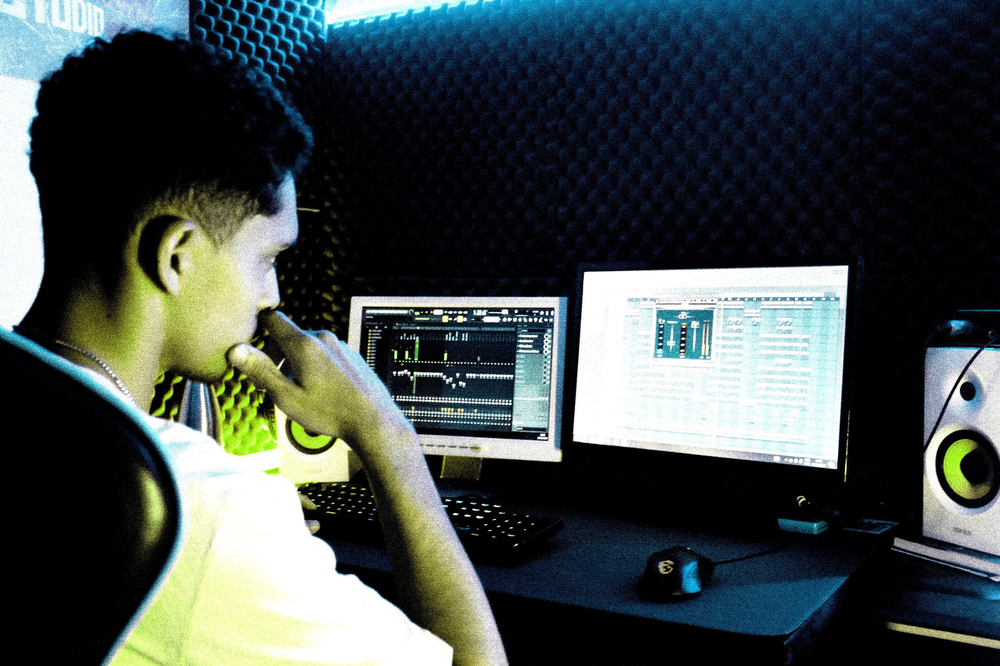
O selo de qualidade. Loudness competitivo para todas as plataformas.
Artistas que confiaram no processo.
Cada grande música começa com uma conversa. Me conte sua visão e transformemos em realidade.
Experimente o estúdio pelo navegador
Configuração Neurocognitiva